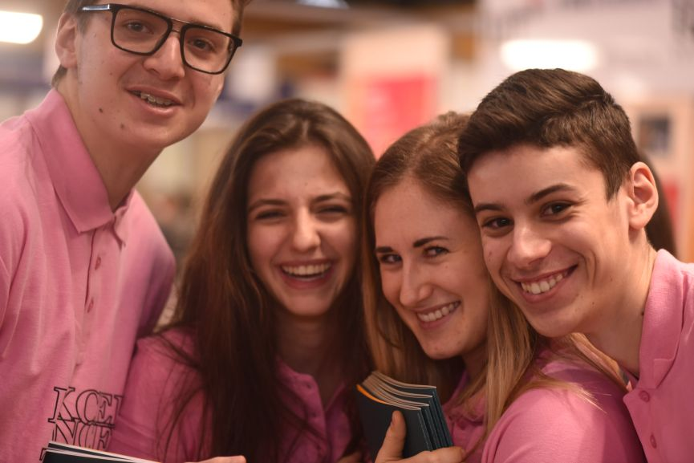

Accueil

Nous rencontrer en 2022
En virtuel c'est bien mais en vrai c'est mieux Voici la liste des possibilités de rencontres de l'IUT Lyon 1
L'IUT Lyon 1 sera présent :
Au salon du Roanne au Scarabée le 16 décembre 2021
Au salon de l'Étudiant de Lyon les 7, 8 et 9 janvier 2022
Lors des Journées de l'Enseignement Supérieur - JES - des 26 et 27 janvier 2022 (Attention modalité d'accueil différente sur le site de Bourg-en-Bresse)
Lors de l'opération portes ouvertes du samedi 5 février 2022 (Attention modalité d'accueil différente sur le site de Bourg-en-Bresse) Et dans plus de 70 établissements : Lycées, regroupement de lycées, pour des conférences, des salons et des interventions.
azdazda
Calendrier
ouverture des candidatures